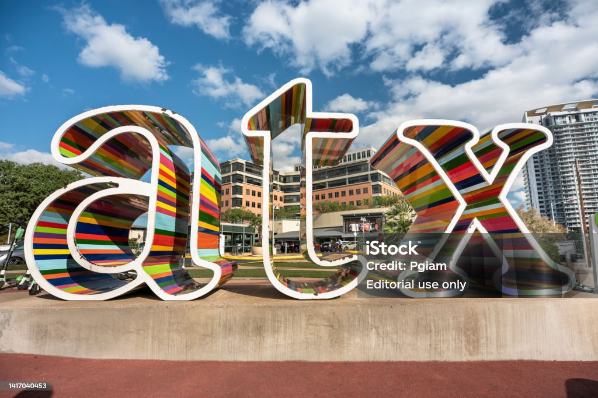
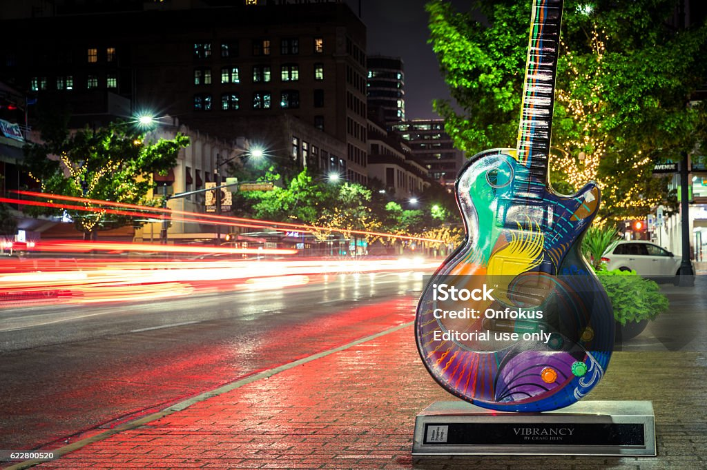

Austin
Keep Austin weird
"Hook em horns" — slogan of the University of Texas
"Hook em horns" — slogan of the University of Texas
Austin, the capital of Texas. This diverse city truely is defined by it's slogan Keep Austin Weird. Only in this city can you have the Texas equivelent of Bourbon street in New Orleans with 6th Street. While having the white marble halls of the capital building not too far away. While Austin does not have any professional sports teams it is home to the University of Texas Longhorns.

Austin is laced with beautiful views of the Colorado river which runs through the city. In addition Austin is located near the gorgeous Texas Hill Country. In Austin you can visit 6th street, Zilker park, The tower at the university of Texas, and many more attractions. Notable celebrities from Austin include Willie Nelson, Nelly, Ethan Hawke and Amber Heard to name a few.
